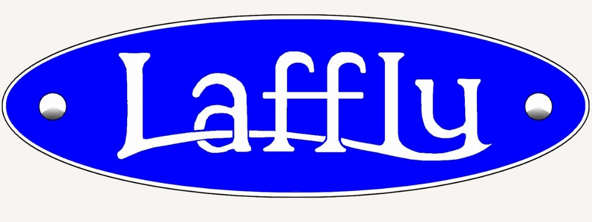
La société Laffly est l’un des constructeurs français les plus innovants de l’entre-deux-guerres. Ses véhicules militaires se distinguent par leurs galets avant caractéristiques, destinés à améliorer le franchissement en terrain difficile.
La gamme couvre la reconnaissance, l’artillerie, la logistique et les auto-mitrailleuses blindées. Voici la fiche complète de tous les véhicules Laffly présents dans la collection du Musée HOP WW2.
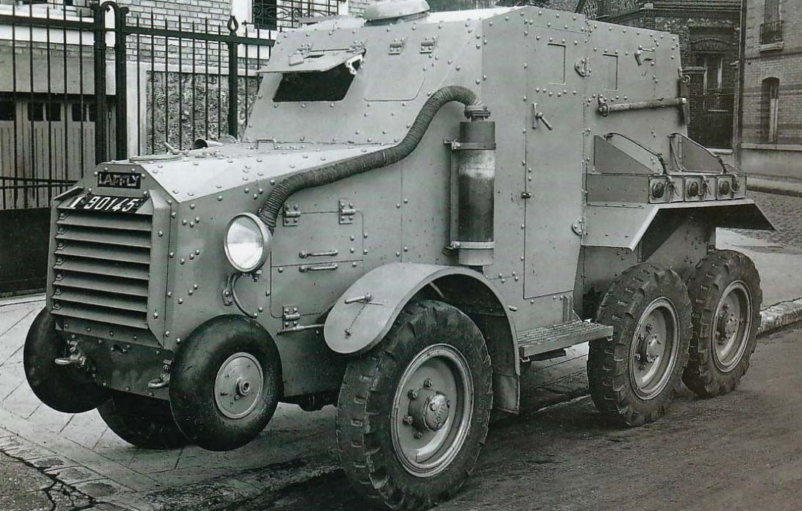
Version destinée aux théâtres d’opérations extérieurs (Territoires d’Outre-Mer). Blindage léger, tourelle coloniale, excellente mobilité en terrain sableux.
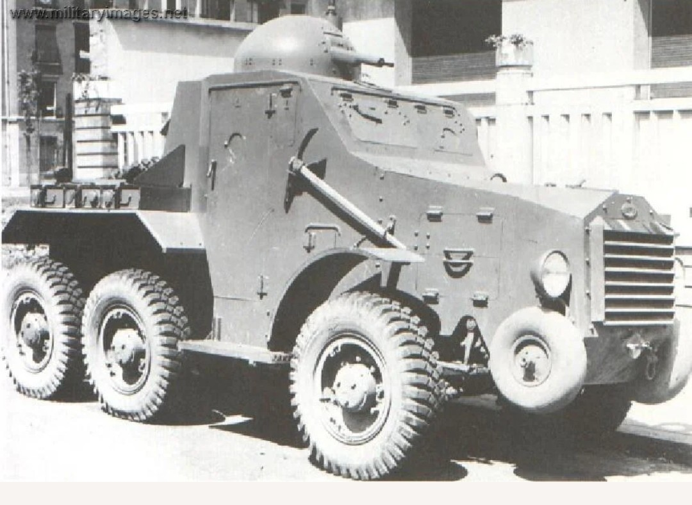
Version standard blindée, tourelle basse, silhouette compacte. Conçu pour la reconnaissance rapide et la liaison en zone de combat.
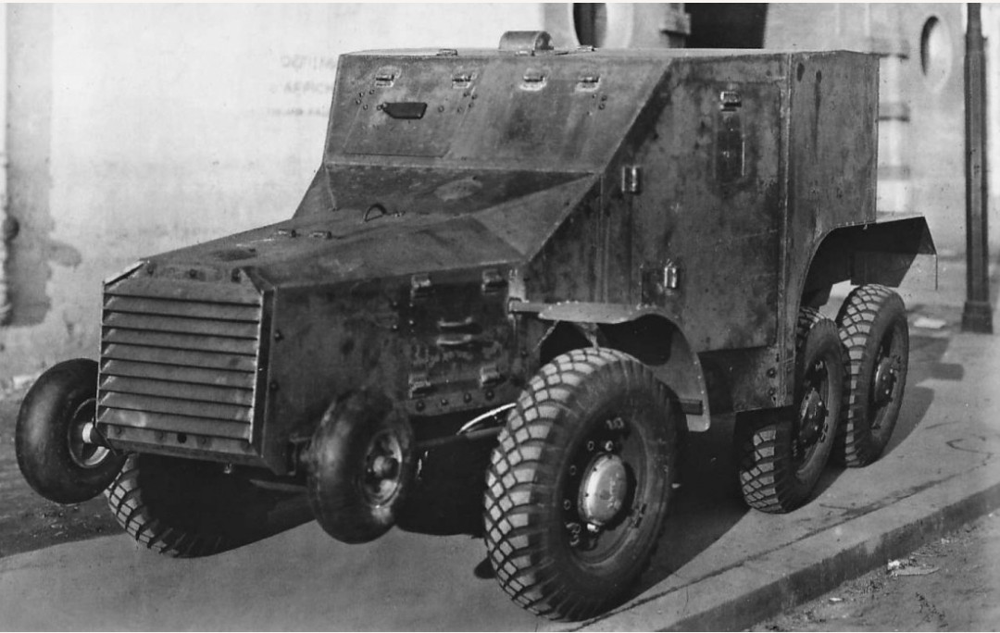
Version blindée lourde de la série S15. Tourelle haute, caisse renforcée, meilleure protection pour les équipages.
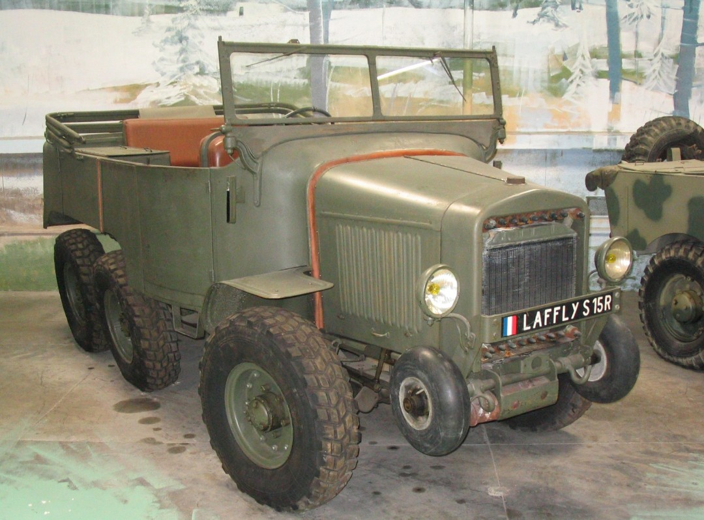
Version non blindée, cabine ouverte. Véhicule léger de reconnaissance, idéal pour l’observation et les missions de liaison.
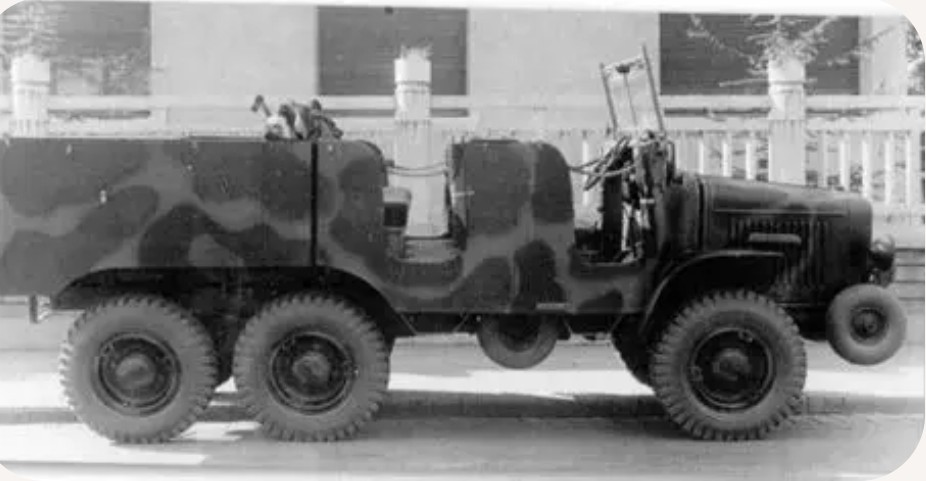
Tracteur d’artillerie destiné au remorquage des canons de 75 et 105 mm. Cabine ouverte, excellente motricité grâce au système Laffly.
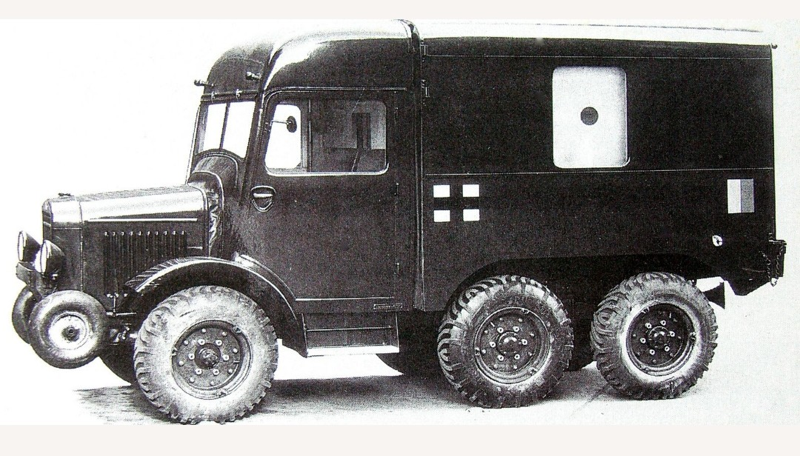
Ambulance militaire avec caisse arrière fermée et fenêtre latérale. Utilisée pour le transport des blessés et du personnel médical au sein des unités sanitaires motorisées.
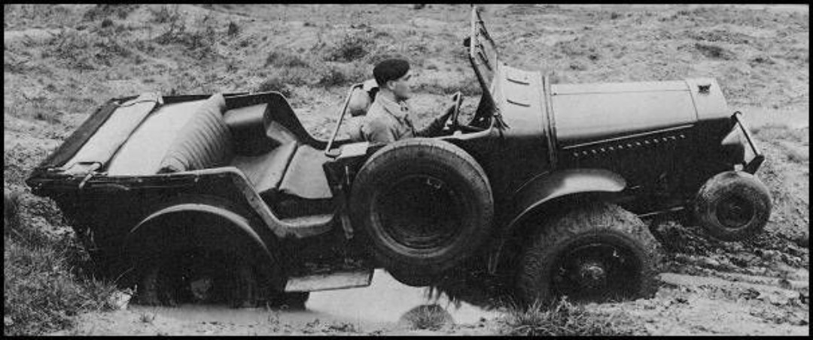
Véhicule de reconnaissance 4×4. Châssis court, galets avant, très bonne mobilité. Souvent photographié en tests de franchissement.
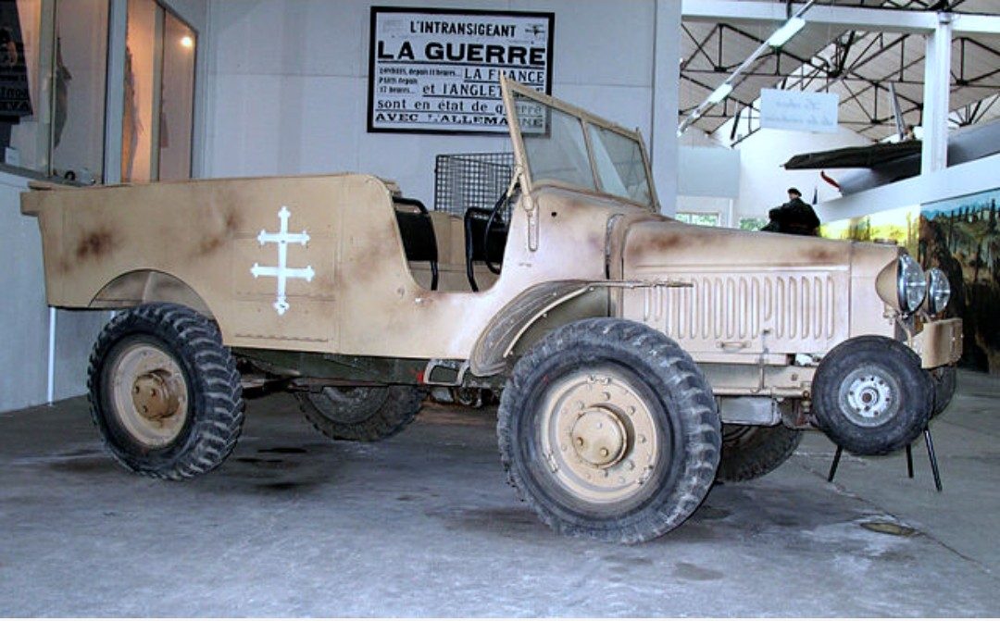
Tracteur léger du canon de 25 mm. Version désert, utilisé par les FFL. Compact, agile, idéal pour les terrains difficiles.
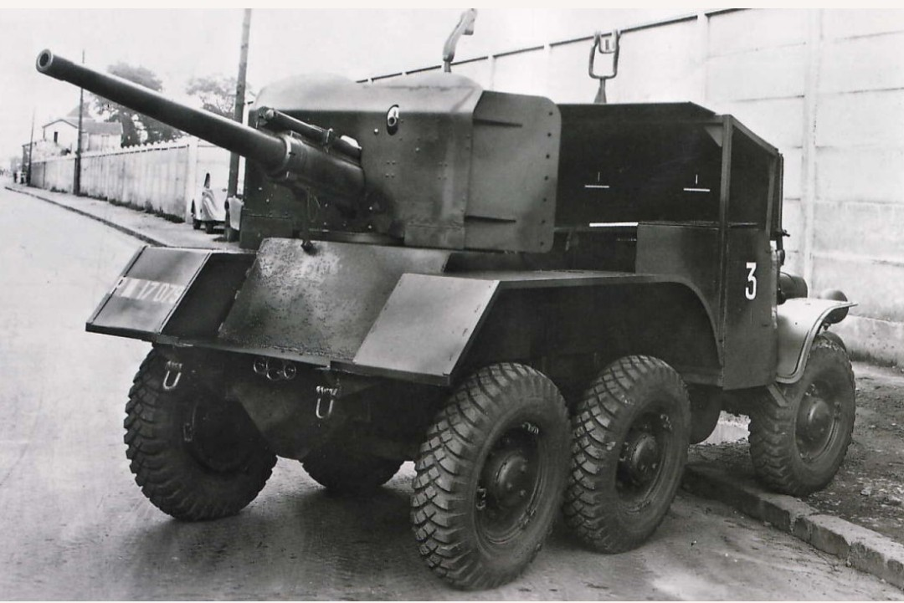
Véhicule antichar improvisé, armé d’un canon de 47 mm. Monté sur châssis W15, il fut l’un des rares chasseurs de chars français de 1940.
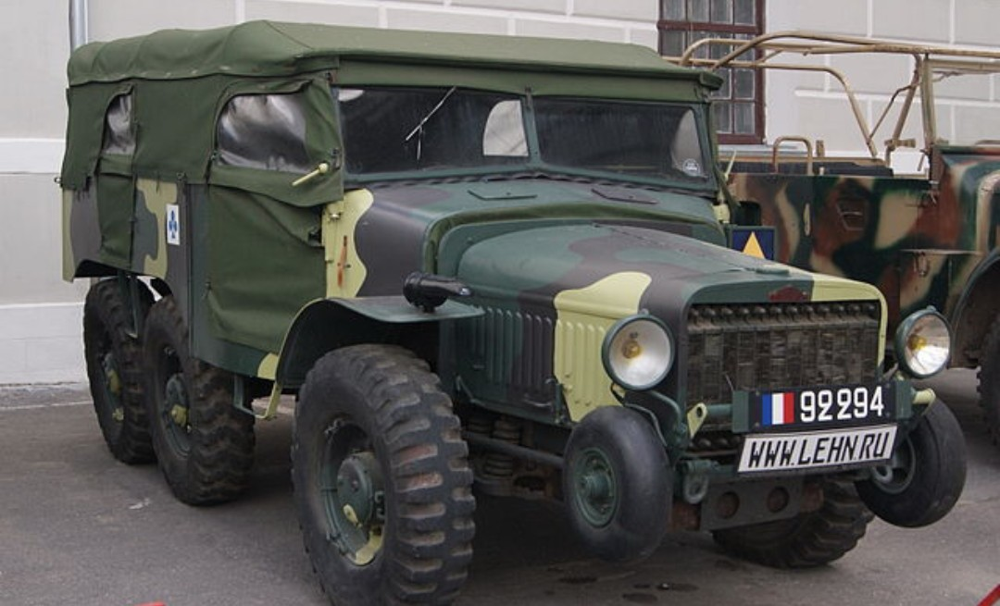
Version non armée du châssis W15. Utilisé pour le transport de matériel, les unités motorisées et les services logistiques.